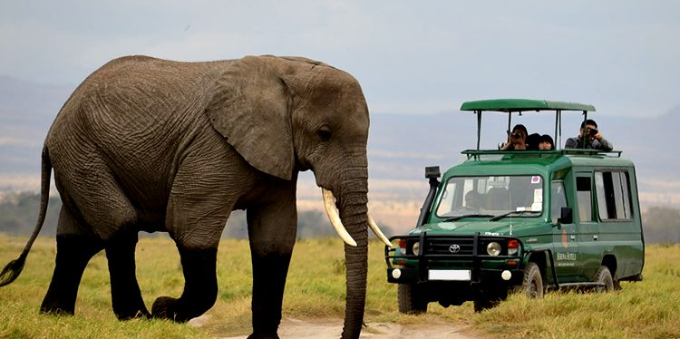
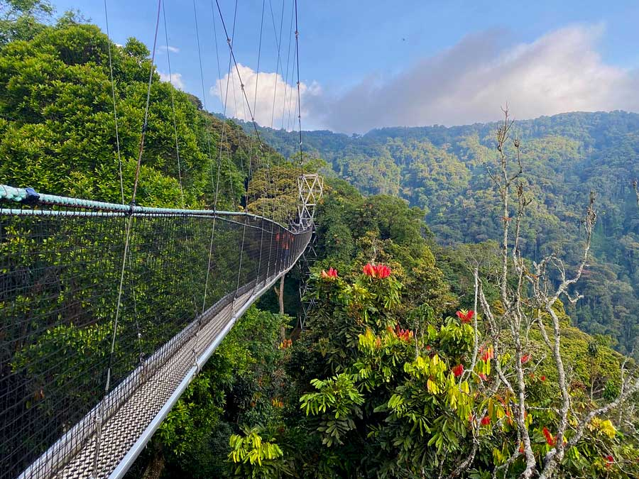

Programma del Viaggio
Giorno 1: Partenza da Milano
Volo da Milano a Kigali, capitale del Rwanda dal 1962 e città più popolosa (1,7 milioni di abitanti).
Kigali, al centro del paese a 1.567 m di altitudine, è un centro economico e culturale in rapido sviluppo.
I partecipanti avranno modo di conoscersi e prepararsi per l'avventura,
iniziando il loro viaggio di esperienza culturale e volontariato.
Giorno 2: Arrivo a Kigali e Visita Storica
Arrivo a Kigali e visita al
Memoriale del Genocidio dei Tutsi a Gisozi,
luogo di memoria dedicato alle vittime del genocidio.
Il Memoriale offre un'esperienza intensa per i visitatori,
promuovendo riconciliazione e pace attraverso l'educazione.
I partecipanti potranno riflettere sui temi della memoria,
partecipando a una discussione e un'attività di gruppo per elaborare le emozioni.
Giorno 3: Visita al Parco dell'Akagera
Giornata al Parco Nazionale dell'Akagera,
la più grande zona umida protetta dell'Africa centrale e ultimo rifugio per specie della savana in Rwanda.
I partecipanti osserveranno la fauna selvatica durante il safari,
discutendo della conservazione ambientale e della biodiversità del Rwanda.
Pranzo al sacco e attività di esplorazione della natura.

Giorno 4A: Visita ai Musei Nazionali
Visita ai Musei Nazionali del Rwanda a Nyanza e Butare.
I partecipanti esploreranno la storia e la cultura del paese attraverso le esposizioni dei musei,
tra cui la ricostruzione della residenza reale, il Palazzo del Re,
un'abitazione con tetto di paglia splendidamente realizzata a forma di alveare,
e il vicino Museo Etnografico,
dono del re Baldovino del Belgio alla fine degli anni '80, che ospita una delle migliori collezioni etnografiche dell'Africa.
Durante la visita, si discuterà dei cambiamenti storici e culturali del Rwanda.

Giorno 4: Partenza per Kibeho
Partenza per Kibeho,
località di importanza spirituale e storica in Rwanda,
famosa per le apparizioni mariane riconosciute dalla Chiesa cattolica e meta di pellegrinaggio.
I partecipanti esploreranno la spiritualità del luogo,
immergendosi nella cultura religiosa e riflettendo sull'importanza della fede nella vita locale.
Giorno 5-7: Esperienza alla Scuola Primaria di Bumazi
Tre giornate alla Scuola Primaria di Bumazi,
dedicate alle attività educative e allo scambio culturale con i bambini.
L'insegnamento dell'inglese sarà centrale,
insieme a giochi e laboratori ludici per favorire un apprendimento interattivo.
Nel pomeriggio del secondo giorno,
visita all'ospedale di Mibilizi/Gihundwe per conoscere il sistema sanitario locale.
L'esperienza si concluderà il terzo giorno con discussioni sull'importanza dell'istruzione,
saluti e riflessione sull'impatto delle attività svolte.

Giorno 8: Visita alla Fabbrica del Tè Shagasha
Visita guidata alla Fabbrica del Tè Shagasha, importante realtà economica locale.
I partecipanti osserveranno l'intero processo di produzione del tè, dalla raccolta alla lavorazione.
Si discuterà dell'impatto dell'industria del tè sull'economia locale e dell'importanza del commercio equo,
riflettendo sulle sfide e opportunità per gli agricoltori.

Giorno 9: Escursione nella Foresta di Nyungwe
Giornata di escursione nella Foresta di Nyungwe,
una delle foreste pluviali più antiche e biodiversificate dell'Africa.
I partecipanti esploreranno i sentieri, immersi nella biodiversità e nelle specie uniche di flora e fauna del Rwanda.
Sarà possibile osservare primati come scimpanzé e colobi e riflettere sull'importanza della conservazione di questi ecosistemi.

Giorno 10-11: Ritorno a Kigali e Conclusione del Viaggio
Partenza da Rusizi verso Kigali via Kibuye, con sosta sulle rive del Lago Kivu,
uno dei Grandi Laghi africani, per ammirare la bellezza naturale e riflettere sul viaggio.
A Kigali, la giornata seguente sarà dedicata al relax e alla riflessione sulle esperienze in Rwanda.
In serata, cena di addio e cerimonia di chiusura per condividere emozioni e ricordi.
Giorno 12: Rientro in Italia
Ultimo giorno del viaggio.
I partecipanti partiranno da Kigali per rientrare in Italia,
portando con sé i ricordi di un'esperienza unica di scambio culturale, volontariato e scoperta.
Questo viaggio non è solo un ritorno fisico,
ma anche un'opportunità per riflettere sulle lezioni apprese, i legami creati,
e l'arricchimento personale guadagnato lungo il percorso.
 Contatta su WhatsApp
Contatta su WhatsApp